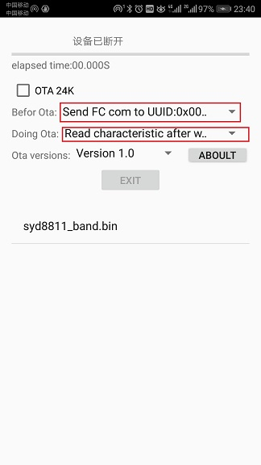
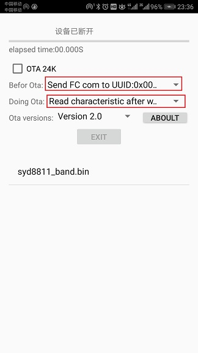
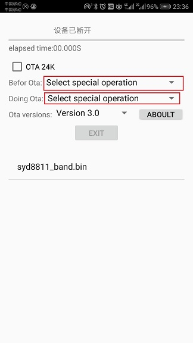

在OTA界面中有如下选项：
1.OTA 24K，该选项被选中的时候代表此时OTA的是SYD8801中24K空间的静态数据，当然对于SYD8821和SYD8811就相当于FLASH DATA的数据，当不选中的时候代表此时OTA的是代码，默认不选中！
2.before Ota,该选项决定在进行OTA之前可否要进行某些额外的处理，有如下可选功能：
A.Select special operation，该选项代表在OTA之前不会进行任何额外的操作！
B.Send FC com to UUID:0x0001,该功能代表在OTA之前会通过UART通道发送FC命令，在SYD8801的手环等产品中会通过该命令进行蓝牙速度的提升，也就是提高蓝牙的功耗，以保证OTA图中有更快的速度！
3.Doing Ota,该选项决定在ota过程中的具体行为，有如下可选功能：
A.Select special operation，该选项代表在OTA之前不会进行任何额外的操作！
B.Read characteristic after write,该功能代表在OTA的流程是 write read write read.......,也就是写完一个数据包后还要读取一次，这样的方式比较可靠，但是速度十分慢！
Version 1.0
该版本OTA是SYD8801的OTA协议，对于SYD8821和SYD8811在代码小于65536Byte下也是可以使用的，但是当代码量超过65536Byte后该版本的OTA将不再适用！
该版本下OTA一般使用的选项如下：

Version 2.0
该版本OTA协议是基于“Version 1.0”修复代码量最大为65536Byte的问题，同时当升级完成后蓝牙设备端还会上报是否升级成功，当然这里修改了协议，蓝牙设备端的代码也要相应的修改！
该版本下OTA一般使用的选项如下：

Version 3.0
该版本OTA协议是基于“Version 2.0”，同时这里对协议有很大的改动，采用分段传输的形式，每段传输还会进行校验值的比较！
该版本下OTA一般使用的选项如下：
